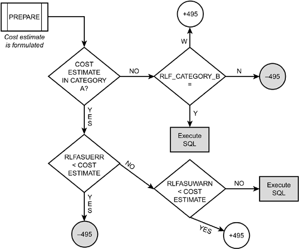

The Resource Limit Facility
The DB2 Resource Limit Facility (RLF) is a governor that limits specific DB2 resources that can be consumed by dynamic SQL. There are two modes used by the RLF: reactive and predictive. With reactive governing, DB2 will allow the query to begin, but will limit the resources it can consume. With predictive governing, DB2 attempts to determine the resources that will be consumed before the query runs.
With predictive governing, you can stop a statement from executing before it has consumed any resources at all. This is an advantage over the reactive governor, which can stop a dynamic SQL statement only after it has exceeded its limit. With reactive governing, resources are consumed, but no valuable work is completed.
Reactive Governing
With reactive governing, the RLF limits the CPU consumed by dynamic SQL issued by plan name, terminating the requests that exceed the limit and returning a -905 SQLCODE to the requesting program. The RLF also limits dynamic SQL issued by collection name. This effectively limits the dynamic SQL capabilities of all plans and packages of a collection.
Also, the RLF can control when the BIND command can be issued. The RLF establishes a means whereby particular plans, packages, or entire collections are unavailable for binding, even to those authorized to issue the BIND command. In addition to checking for BIND authority, DB2 checks the RLF specifications before allowing a bind.
Predictive Governing
With predictive governing, DB2 determines the cost category for SQL statements at runtime. Recall from Chapter 25, "Using EXPLAIN," that DB2 can produce cost estimates for SQL statements and assigns the estimate to one of two categories—category A or category B. You can examine the COST_CATEGORY column of the DSN_STATEMNT_TABLE to determine whether a given SQL statement falls into category A or B.
Predictive governing can be set up to cause the prepare for a dynamic SELECT, INSERT, UPDATE, or DELETE statement to fail if the cost estimate is exceeded. For category A cost estimates where the error threshold is exceeded, DB2 returns a -495 SQLCODE to the application at PREPARE time, and the statement is not prepared or executed. If the estimate is in cost category A and the warning threshold is exceeded, a +495 SQLCODE is returned at prepare time, but the prepare is completed, and the application must decide whether to run the statement or not.
Additionally, you can specify what action DB2 should take for cost estimates in category B. The predictive governing process is outlined in Figure 29.1.

The RLF is designed to govern performance based on rows in a table known as a Resource Limit Specification Table (RLST). All resource limits, for both reactive and predictive governing, are defined using a table known as the RLST.
To define the RLST, use the following DDL:
CREATE DATABASE DSNRLST;
CREATE TABLESPACE DSNRLSxx
IN DSNRLST;
CREATE TABLE authid.DSNRLSTxx
(AUTHID CHAR(8) NOT NULL WITH DEFAULT,
PLANNAME CHAR(8) NOT NULL WITH DEFAULT,
ASUTIME INTEGER,
LUNAME CHAR(8) NOT NULL WITH DEFAULT,
RLFFUNC CHAR(1) NOT NULL WITH DEFAULT,
RLFBIND CHAR(7) NOT NULL WITH DEFAULT,
RLFCOLLN CHAR(18) NOT NULL WITH DEFAULT,
RLFPKG CHAR(8) NOT NULL WITH DEFAULT,
RLFASUERR INTEGER,
RLFASUWARN INTEGER,
RLF_CATEGORY_B CHAR(1) NOT NULL WITH DEFAULT
)
IN DSNRLST.DNSRLSxx;
CREATE UNIQUE INDEX authid.DSNARLxx
ON authid.DSNRLSTxx
(RLFFUNC,
AUTHID DESC,
PLANNAME DESC,
RLFCOLLN DESC,
RLFPKG DESC,
LUNAME DESC)
CLUSTER
CLOSE NO;
Defining the RLST
A definition of each column in the RLST is provided in Table 29.1.
Table 29.1. The Columns of the RLSTName | Definition |
|---|
AUTHID | Identifies the primary authorization ID of the user to whom the limit set by this row applies. If blank, this row applies to all primary authorization IDs at the location specified by the LUNAME column. | PLANNAME | Specifies the plan name for which the limit set by this row applies. If blank, this row applies to all plan names at the location specified by the LUNAME column. PLANNAME is valid only when RLFFUNC is blank. If RLFFUNC contains a value, the column must be blank or the entire row is ignored. | ASUTIME | Specifies the maximum number of CPU service units permitted for any single dynamic SQL statement. If NULL, this row does not apply a limit. If less than or equal to 0, this row indicates that dynamic SQL is not permitted. | LUNAME | The logical unit name of the site where the request originated. If blank, this row applies to the local site. If PUBLIC, this row applies to all sites. | RLFFUNC | Indicates the type of resource this row is limiting:
blank = row governs dynamic SQL reactively by plan name
1 = row governs BIND for plans or packages in collections
2 = row governs dynamic SQL reactively by collection and package names
3 = row disables query I/O parallelism
4 = row disables query CP parallelism
5 = row disables Sysplex query parallelism
6 = row governs dynamic SQL predictively by plan name
7 = row governs dynamic SQL predictively by collection and package names
If any other values are in this column, the row is ignored. | RLFBIND | Indicates whether the BIND command is permitted. The value N indicates that BIND is not allowed; any other value means that the BIND command is allowed. Valid only when RLFFUNC equals 1. | RLFCOLLN | Specifies the name of the collection to which this RLF row applies. If blank, this row applies to all packages at the location specified by the LUNAME column. If RLFFUNC is blank, 1, or 6, RLFCOLLN must be blank or the entire row is ignored. | RLFPKG | Specifies the package name for which the limit set by this row applies. If blank, this row applies to all packages at the location specified by the LUNAME column. If RLFFUNC is blank, 1 or 6, RLFPKG must be blank or the entire row is ignored. | RLFASUERR | Specifies the maximum number of CPU service units permitted for any single dynamic SQL statement. If the threshold is exceeded, a -495 SQLCODE is returned to the application. If NULL, this row does not apply a limit. If less than or equal to 0, this row indicates that dynamic SQL is not permitted. Used for predictive governing only (RLFFUNC 6 or 7). Additionally, the dynamic SQL statements must be in cost category A. | RLFASUWARN | Specifies the maximum number of CPU service units permitted for any single dynamic SQL statement. If the threshold is exceeded, a +495 SQLCODE is returned to the application as a warning. If NULL, this row does not apply a limit. If less than or equal to 0, this row indicates that all dynamic SQL will receive a +495 SQLCODE as a warning. Used for predictive governing only (RLFFUNC 6 or 7). Additionally, the dynamic SQL statements must be in cost category A | RLF_CATEGORY_B | Specifies the default action to take for category B cost estimates. Used for predictive governing (RLFFUNC 6 or 7). Valid values are as follow: | blank | Execute the dynamic SQL statement. | Y | Prepare and execute the SQL statement. | N | Do not prepare or execute the SQL statement. Return -495 SQLCODE to the application. | W | Complete the prepare, return +495 SQLCODE as a warning to let the application decide whether to execute the dynamic SQL statement or not. |
CAUTION
Be sure to make the value of RLFASUWARN less than the value of RLFASUERR. If the warning value is higher, the warning will never be reported because an error will always occur before the warning.
Regulate the impact of dynamic SQL using the RLF. SPUFI, QMF, packaged applications (such as SAP and Peoplesoft), and many vendor-supplied tools use dynamic SQL. Limit usage for these types of tools to reduce the possibility of runaway ad hoc queries that hog system resources.
|
Favor predictive governing over reactive governing to save resources. It is better to know "up front" that a particular query is destined to exceed your service level agreement. That way, you can tune the query and optimize it, instead of having the query fail during processing. |
You can create multiple RLSTs, with each controlling resources in a different manner. Some reasons for doing this are as follows:
To control the same resources in different RLSTs with different limits. To control different resources in different RLSTs. To eliminate resource control for a plan or package from a certain RLST, thereby removing the limit. To control one type of limiting separately from another type; for example, to control binds in one RLST, plans and packages in another, and users in another. However, this is impractical because only one RLST can be active at any given time.
The RLF is started using the START RLIMIT command, which is discussed in Chapter 36, "DB2 Commands." Using this command, a DBA can specify which RLST should be activated for resource limiting.
|
Use several RLSTs to control dynamic SQL access differently during different periods. For example, consider a plan containing dynamic SQL statements that consumes 10 CPU seconds normally but consumes 20 CPU seconds during month-end processing. You can define two RLSTs, one with a limit of 10 and another with a limit of 20. The first RLST is active most of the time, but the DBA can switch the RLF to use the second RLST during month-end processing. This ensures that both normal and month-end processing are controlled adequately. |
|